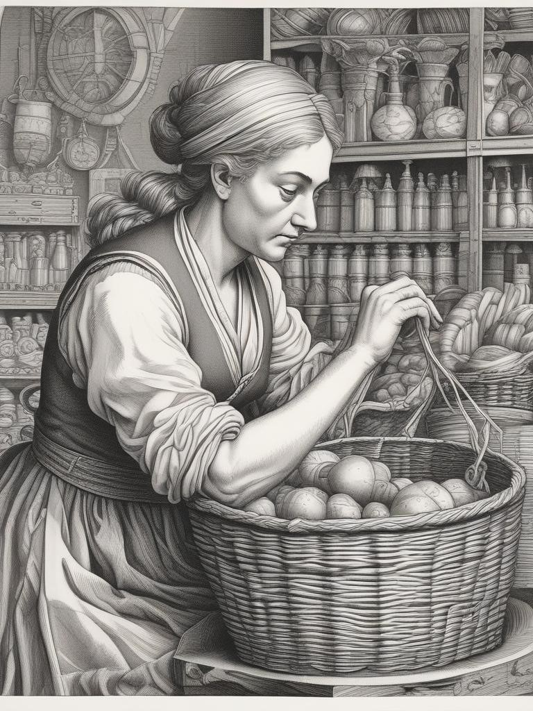
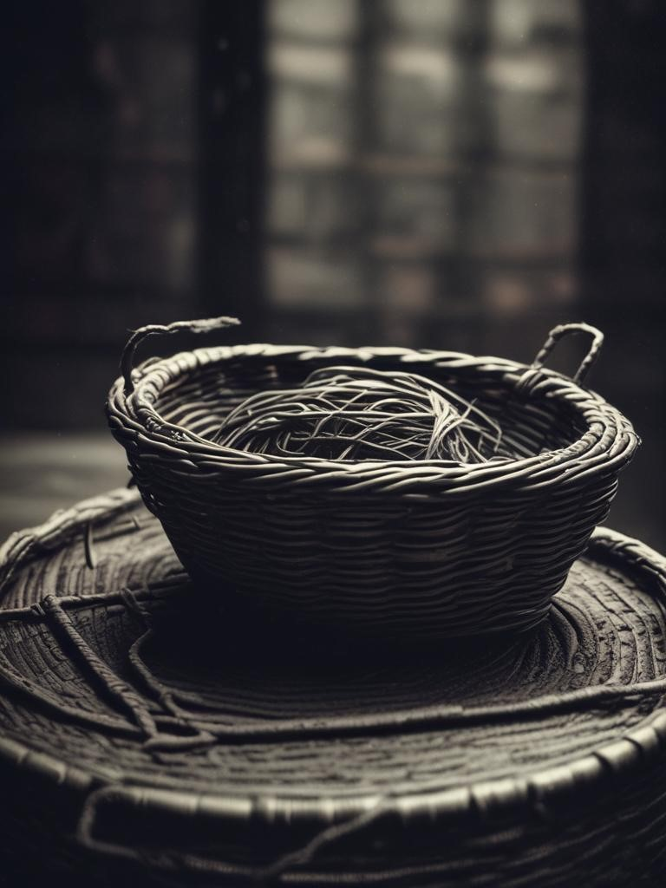

Articles
"Basket Weaving Secrets Unraveled: Expert Tips from Master Weavers"
Summary: Unlock the mysteries of basket weaving with insights from seasoned craftsmen. Learn insider techniques, from selecting the perfect reeds to mastering complex weaving patterns, as shared by those who have dedicated their lives to this timeless art.
This article is a treasure trove of valuable insights for both beginners and seasoned basket weavers alike. The firsthand tips and techniques shared by master weavers offer invaluable guidance for anyone looking to hone their craft. The accompanying images effectively complement the text, providing visual examples of the discussed weaving methods and patterns. What sets this article apart is its emphasis on the craftsmanship behind basket weaving, highlighting the skill and dedication required to create truly exceptional pieces. Whether you're a novice or an expert, this article is sure to inspire and inform your basket weaving journey.
Samantha Givens
"Healing Through Handcrafts: The Therapeutic Benefits of Basket Weaving"
Summary: Delve into the therapeutic power of basket weaving and its profound effects on mental well-being. Through interviews with psychologists and personal testimonies, discover how this simple yet profound craft is aiding individuals in finding peace and healing.
This thought-provoking article delves into the profound therapeutic effects of engaging in the art of basket weaving. Through personal anecdotes and expert opinions, it explores how this ancient craft can serve as a powerful tool for promoting mental well-being and emotional healing. The images featured in the article effectively convey the sense of tranquility and focus that comes with immersing oneself in the rhythmic process of weaving. What makes this article particularly compelling is its exploration of the intersection between art and therapy, shedding light on the transformative potential of creative expression. Overall, it's a poignant reminder of the healing power inherent in the act of creation.
Jamirah Johnson
"The Renaissance of Basket Weaving: Traditional Craft Meets Modern Artistry"
Summary: Explore the resurgence of interest in basket weaving among contemporary artisans. From intricate patterns to innovative materials, discover how this ancient craft is being reimagined for the 21st century.
The article beautifully captures the essence of the resurgence of basket weaving in contemporary times. It effectively illustrates how traditional craftsmanship is seamlessly blending with modern artistic sensibilities to create stunning pieces of woven art. The images accompanying the article vividly depict the intricate patterns and innovative designs that are breathing new life into this ancient craft. What makes this article stand out is its exploration of the cultural significance of basket weaving and its evolution over time. Overall, it's a captivating read that celebrates the enduring appeal of basket weaving in today's world
John Goodwill
"Basket Weaving Around the World: A Cultural Tapestry of Traditions"
Summary: Embark on a global journey to explore the diverse traditions of basket weaving. From the intricate designs of the Native American tribes to the vibrant colors of African baskets, immerse yourself in the rich cultural heritage woven into each unique creation.
This captivating article takes readers on a global journey to explore the rich tapestry of basket weaving traditions from diverse cultures around the world. Through vibrant descriptions and stunning imagery, it offers a fascinating glimpse into the unique techniques and designs employed by different communities across continents. The article effectively highlights the cultural significance of basket weaving, showcasing how it serves as a link to heritage and identity for many societies. What sets this article apart is its celebration of diversity, demonstrating how basket weaving transcends geographical boundaries to connect people through a shared appreciation for craftsmanship and artistry. Overall, it's an enriching read that underscores the universal appeal of this timeless craft.
Theresa Lyston